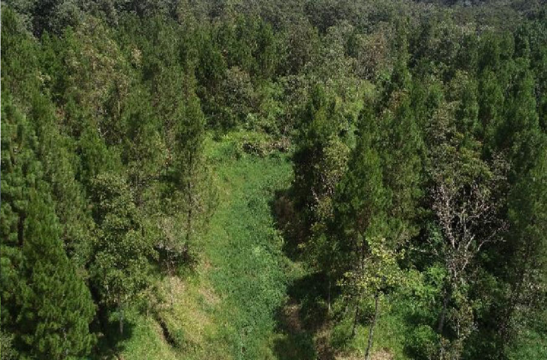
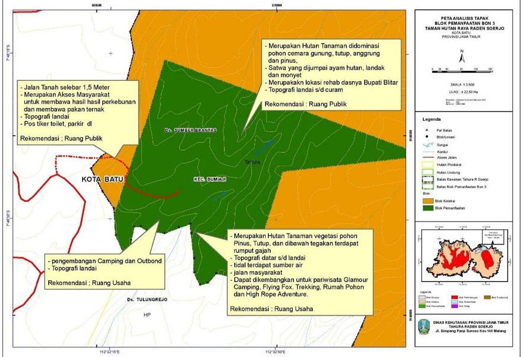

Perlu kalian ketahui bahwa Area wisata Bon 3 merupakan salah satu bagian tempat wisata yang berada di kawasan Taman Hutan Raya Raden Soerjo yang peruntukkannya sebagai blok pemanfaatan seluas 22,50 ha, pada posisi 7° 46’ 16,30” – 7° 46’ 35,43 LS dan 112° 32’ 15,44” – 112°32’ 42,00” BT di wilayah Kota Batu. Area ini memiliki topografi datar, landai dan agak curam dengan ketinggian 1700 mpl. Pada areal datar dan landai sangat strategis untuk pembangunan sarana dan prasarana kegiatan pariwisata alam diantaranya outbond, camping ground, glamour camping, flying fox, tracking, rumah pohon dan High Rope Adventure.
Di area ini flora yang dominan yaitu jenis Cemara Gunung (Casuarina jughuhniana) jenis lainnya yaitu Tutup (Macaranga gigantea), Suren (Tona sureni), Anggrung (Trema orientalis), dan Pinus (Pinus mercusii) dengan persentase penutupan 50%.
Satwa yang sering dijumpai yaitu lutung jawa (Trapytecus auratus), ayam hutan (Galus sp), monyet ekor panjang (Macaca fascicularis) dan babi (Sus scrofa).
Berdasarkan letak geografisnya, berikut ini adalah Peta Deskripsi Analisis Tapak Pengelolaan Lokasi Pariwisata Bon 3.

Pada areal tapak Bon 3 memiliki potensi pariwisata seperti yang sudah di sebutkan diatas beberapa potensi pariwisata dimana Bon 3 memungkinkan dibangun sarana wisata alam semi permanen dengan tidak merubah bentang alam karena memiliki view pemandangan alam yang indah dan udara yang sejuk segar, tidak ada kasus perambahan hutan, bukan merupakan jalur lintas satwa liar besar, dan tidak ada potensi bencana banjir, longsor dan erosi.